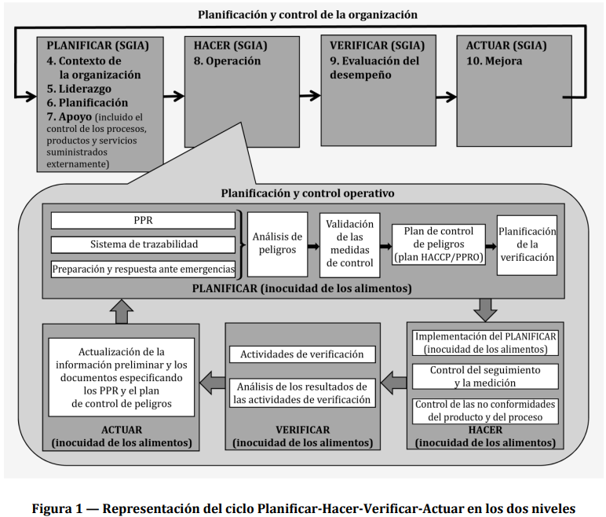

La adopción de un sistema de gestión de la inocuidad de los alimentos (SGIA) es una decisión
estratégica para una organización que le puede ayudar a mejorar su desempeño global en la inocuidad
de los alimentos. Los beneficios potenciales para una organización de implementar un SGIA basado en
este documento son:
a) la capacidad para proporcionar regularmente alimentos y productos inocuos y servicios que
satisfagan los requisitos del cliente, y los requisitos legales y reglamentarios aplicables;
b) abordar los riesgos asociados con sus objetivos;
c) la capacidad de demostrar la conformidad con los requisitos especificados del SGIA.
Este documento emplea el enfoque a procesos (véase 0.3), que incorpora el ciclo Planificar-HacerVerificar-Actuar (PHVA) (véase 0.3.2) y el pensamiento basado en riesgos (véase 0.3.3).
El enfoque a procesos permite a una organización planificar sus procesos y sus interacciones.
El ciclo PHVA permite a una organización asegurarse que sus procesos cuenten con recursos y se
gestionen adecuadamente, y que las oportunidades de mejora se determinen y se actúe en consecuencia.
El pensamiento basado en riesgos permite a una organización determinar los factores que podrían
causar que sus procesos y su SGIA se desvíen de los resultados planificados, y para poner en marcha
controles para prevenir o minimizar los efectos adversos.
En este documento, se utilizan las siguientes formas verbales:
— “debe” indica un requisito;
— “debería” indica una recomendación;
— “puede” indica un permiso, una posibilidad o una capacidad;
Las “NOTAS” proporcionan orientación para la comprensión o clarificación de los requisitos en este
documento.
La inocuidad de los alimentos esta relacionada con la presencia de peligros relacionados con la
inocuidad de los alimentos en el momento de su consumo (ingesta por el consumidor). Los peligros
relacionados con la inocuidad de los alimentos pueden ocurrir en cualquier etapa de la cadena
alimentaria. Por lo tanto, es esencial el control adecuado a lo largo de la cadena alimentaria. La
inocuidad de los alimentos se asegura mediante los esfuerzos combinados de todas las partes en la
cadena alimentaria. Este documento especifica los requisitos para un SGIA que combina los elementos
clave siguientes generalmente reconocidos:
— comunicación interactiva;
— gestión del sistema;
— programas de prerrequisitos;
— principios del análisis de peligros y puntos críticos de control (HACCP, por sus siglas en inglés
Hazard Analysis and Critical Control Point).
Nota a la versión en español: Algunos países utilizan el acrónimo APPCC proveniente del español (Análisis de
Peligros y Puntos Críticos de Control) en lugar del acrónimo inglés HACCP.
Asimismo, este documento se basa en los principios que son comunes en las normas ISO de sistemas de
gestión. Los principios de la gestión son:
— enfoque al cliente;
— liderazgo;
— compromiso de las personas;
— enfoque a procesos;
— mejora;
— toma de decisiones basada en la evidencia;
— gestión de las relaciones.
Este documento adopta un enfoque a procesos al desarrollar e implementar un SGIA y mejorar su
eficacia para aumentar la elaboración de productos y servicios inocuos al mismo tiempo que se cumplen
los requisitos aplicables. La comprensión y gestión de los procesos interrelacionados como un sistema,
contribuye a la eficacia y eficiencia de la organización en lograr sus resultados previstos. El enfoque a
procesos involucra la definición y gestión sistemáticos de los procesos, y sus interacciones, a fin de
lograr los resultados previstos de acuerdo con la política de inocuidad de los alimentos y la dirección
estratégica de la organización. La gestión de los procesos y el sistema como un todo se puede lograr
utilizando el ciclo de PHVA, con un enfoque global de pensamiento basado en riesgos dirigido a
aprovechar las oportunidades y prevenir resultados no deseados.
El reconocimiento del rol y la posición de la organización dentro de la cadena alimentaria es esencial
para asegurar la comunicación interactiva eficaz a lo largo de la cadena alimentaria.
El ciclo PHVA se puede describir brevemente del modo siguiente:
Planificar: establecer los objetivos del sistema y sus procesos, proveer los recursos necesarios para
proporcionar los resultados, e identificar y abordar los riesgos y las oportunidades;
Hacer: implementar lo planificado;
Verificar: realizar el seguimiento y (cuando sea pertinente) la medición de los procesos y los
productos y servicios resultantes, analizar y evaluar la información y los datos
provenientes de las actividades de seguimiento, medición y verificación, e informar los
resultados;
Actuar: tomar acciones para mejorar el desempeño, cuando sea necesario.
En este documento, y como se ilustra en la Figura 1, el enfoque a procesos utiliza en dos niveles el
concepto del ciclo PHVA. El primero incluye el marco global del SGIA (Capítulo 4 al Capítulo 7 y
Capítulo 9 al Capítulo 10). El otro nivel (planificación y control operativo) incluye los procesos
operativos dentro del sistema de inocuidad de los alimentos según se describe en el Capítulo 8. La
comunicación entre los dos niveles es por lo tanto esencial.

El pensamiento basado en riesgos es esencial para lograr un SGIA eficaz. En este documento, el pensamiento basado en riesgos se aborda en dos niveles, de la organización (véase 0.3.3.2) y el operativo (véase 0.3.3.3), lo cual es consecuente con el enfoque basado en procesos descrito en 0.3.2.
El riesgo es el efecto de la incertidumbre y cualquiera de tales incertidumbres pueden tener efectos
positivos o negativos. En el contexto de la gestión de riesgos de la organización, una desviación positiva
que surge de un riesgo puede proporcionar una oportunidad, pero no todos los efectos positivos del
riesgo tienen como resultado oportunidades.
Para estar conforme con los requisitos de este documento, una organización planifica e implementa
acciones para abordar los riesgos de la organización (Capítulo 6). Abordar los riesgos establece una
base para aumentar la eficacia del SGIA, lograr mejores resultados y prevenir efectos negativos.
El concepto de pensamiento basado en riesgos, que surge de los principios del HACCP en el nivel
operativo, está implícito en este documento.
Los pasos posteriores en el HACCP se pueden considerar como las medidas necesarias para prevenir o
reducir los peligros a niveles aceptables para asegurar que el alimento es inocuo en el momento del
consumo (Capítulo 8).
Las decisiones tomadas en la aplicación del HACCP deberían basarse en la ciencia, estar libres de sesgos
y estar documentadas. La documentación debería incluir toda suposición clave en el proceso de toma de
decisión.
Este documento se ha desarrollado dentro de la estructura del alto nivel de ISO (HLS). El objetivo de la
HLS es mejorar el alineamiento entre las normas de sistemas de gestión ISO. Este documento permite a
una organización utilizar el enfoque a procesos, unido con el ciclo de PHVA y el pensamiento basado en
riesgos, para alinear o integrar el enfoque del SGIA con los requisitos de otros sistemas de gestión y
normas de apoyo.
Este documento es el principio central y marco de referencia para los SGIA y establece los requisitos
específicos del SGIA para las organizaciones a lo largo de la cadena alimentaria. Se pueden utilizar,
conjuntamente con este marco de referencia, otras guías relacionadas con la inocuidad de los alimentos,
especificaciones y/o requisitos específicos de los sectores de alimentos.
Asimismo, ISO ha desarrollado una familia de documentos asociados. Estos incluyen documentos para:
— programas de prerrequisitos (serie ISO/TS 22002) para sectores específicos de la cadena
alimentaria;
— requisitos para auditoría y organismos de certificación;
— trazabilidad.
ISO tambien proporciona documentos orientativos para las organizaciones, sobre cómo implementar
este documento y las normas relacionadas. La información está disponible en la página web de ISO.
Este documento especifica los requisitos para un sistema de gestión de la inocuidad de los alimentos
(SGIA) para permitir a una organización que está directa o indirectamente involucrada en la cadena
alimentaria:
a) planificar, implementar, operar, mantener y actualizar un SGIA que proporcione productos y
servicios que sean inocuos, de acuerdo con su uso previsto;
b) demostrar cumplimiento con los requisitos legales y reglamentarios de inocuidad de los alimentos
aplicables;
c) valorar y evaluar los requisitos de inocuidad alimentaria mutuamente acordados con los clientes y
demostrar su conformidad con ellos;
d) comunicar eficazmente los temas de inocuidad de los alimentos a las partes interesadas dentro de
la cadena alimentaria;
e) asegurar que la organización cumpla con su política de inocuidad de los alimentos establecida;
f) demostrar conformidad con las partes interesadas pertinentes;
g) buscar la certificación o registro de su SGIA por una organización externa, o realizar una
autoevaluación o declaración de sí misma de la conformidad con este documento.
Todos los requisitos de este documento son genéricos y se prevé que sean aplicables a todas las
organizaciones de la cadena alimentaria, sin importar su tamaño o complejidad. Las organizaciones que
están directa o indirectamente involucradas incluyen, pero no se limitan a, productores de alimento
para animales productores de alimentos, productores de alimentos para animales, cosechadores de
plantas y animales silvestres, agricultores, productores de ingredientes, fabricantes de alimentos,
minoristas, y organizaciones que proporcionan servicios de alimentos, servicios de catering, servicios
de limpieza y desinfección, servicios de transporte, almacenamiento y distribución, proveedores de
equipamiento, limpieza y desinfectantes, materiales de embalaje y otros materiales en contacto con
alimentos.
Este documento permite a cualquier organización, incluidas las pequeñas y/o menos desarrolladas (por
ejemplo una granja pequeña, un envasador-distribuidor pequeño, un minorista pequeño o venta de
servicio de alimentos) implementar elementos desarrollados externamente en su SGIA.
Los recursos internos y/o externos se pueden utilizar para cumplir los requisitos de este documento.
No hay referencias normativas en este documento.
Para los fines de este documento, se aplican los términos y definiciones siguientes.
ISO e IEC mantienen bases de datos terminológicas para su utilización en normalización en las
siguientes direcciones:
— Plataforma de búsqueda en línea de ISO: disponible en https://www.iso.org/obp
— Electropedia de IEC: disponible en http://www.electropedia.org/
nivel de un peligro relacionado con la inocuidad de los alimentos (3.22) que no se debe exceder en el producto terminado (3.15) proporcionado por la organización (3.31)
especificación medible u observable para el seguimiento (3.27) de un PPRO (3.30)
Nota 1 a la entrada: Un criterio de acción se establece para determinar si un PPRO permanece bajo control, y
distingue entre lo que es aceptable (que el criterio cumpla o logre significa que el PPRO está operando como está
previsto) e inaceptable (que el criterio no se cumple ni se logre significa que el PPRO no está operando como está
previsto).
proceso (3.36) sistemático, independiente y documentado para obtener evidencia de auditoría y
evaluarla objetivamente para determinar el grado en el que se cumplen los criterios de auditoría
Nota 1 a la entrada: Una auditoría puede ser interna (de primera parte), o externa (de segunda o tercera parte), y
puede ser una auditoría combinada (combinando dos o más disciplinas).
Nota 2 a la entrada: Una auditoría interna es realizada por la propia organización, o por una parte externa en su
nombre.
Nota 3 a la entrada: “Evidencia de auditoría” y “criterio de auditoría” se definen en la Norma ISO 19011.
Nota 4 a la entrada: Disciplinas pertinentes son, por ejemplo, gestión de la inocuidad de los alimentos, gestión de
la calidad o gestión ambiental.
capacidad para aplicar conocimientos y habilidades para lograr los resultados previstos
cumplimiento de un requisito (3.38)
introducción o incidencia de un contaminante incluyendo un peligro relacionado con la inocuidad de los alimentos (3.22) en un producto (3.37) o ambiente de elaboración
actividad recurrente para mejorar el desempeño (3.33)
acción o actividad que es esencial para prevenir un peligro relacionado con la inocuidad de los alimentos
(3.22) significativo o reducirlo a un nivel aceptable (3.1)
Nota 1 a la entrada: Véase también la definición de peligro significativo relacionado con la inocuidad de los
alimentos (3.40).
Nota 2 a la entrada: Las medidas de control están identificadas por el análisis de peligros
acción para eliminar una no conformidad (3.28) detectada
Nota 1 a la entrada: Una corrección incluye la manipulación de productos potencialmente no inocuos, y por lo
tanto puede efectuarse conjuntamente con una acción correctiva (3.10).
Nota 2 a la entrada: Una corrección puede ser, por ejemplo, reproceso, procesamiento posterior, y/o eliminación
de las consecuencias adversas de la no conformidad (por ejemplo la disposición para otro uso o un etiquetado
específico).
acción para eliminar la causa de una no conformidad (3.28) y para prevenir la recurrencia
Nota 1 a la entrada: Puede haber más de una causa para una no conformidad.
Nota 2 a la entrada: La acción correctiva incluye el análisis de las causas.
etapa en el proceso (3.36) en la que se aplican las medidas de control (3.8) para prevenir o reducir un peligro significativo relacionado con la inocuidad de los alimentos (3.40) hasta un nivel aceptable, y límites críticos (3.12) definidos y la medición (3.26) permite la aplicación de correcciones (3.9)
valor medible que diferencia la aceptabilidad de la inaceptabilidad
Nota 1 a la entrada: Los límites críticos se establecen para determinar si un PCC (3.11) permanece bajo control. Si
se excede o no se cumple un límite crítico, los productos afectados se manipulan como productos potencialmente
no inocuos.
[FUENTE: CAC/RCP 1-1969, modificado — La definición ha sido modificada y se ha agregado la Nota 1 a
la entrada.]
información requerida para ser controlada y mantenida por una organización (3.31) y el medio en el
cual está contenida
Nota 1 a la entrada: La información documentada puede estar en cualquier formato y medio, y que provenga de
cualquier fuente.
Nota 2 a la entrada: La información documentada puede referirse a:
— el sistema de gestión (3.25), incluidos los procesos (3.36) relacionados;
— información creada para que la organización funcione (documentación);
— evidencia de los resultados logrados (registros).
medida en que se realizan las actividades planificadas y se logran los resultados planificados
producto (3.37) que no se someterá a procesamiento o transformación posterior por parte de la
organización (3.31)
Nota 1 a la entrada: Un producto que es sometido a un procesamiento o transformación posterior por otra
organización, es un producto terminado, en el contexto de la primera organización, y una materia prima o un
ingrediente, en el contexto de la segunda organización.
productos simples o compuestos, ya sean procesados, semi-procesados o crudos, que se destinan para
la alimentación de animales productores de alimentos
Nota 1 a la entrada: En este documento se hacen distinciones entre los términos alimento (3.18), alimento para
animales productores de alimentos (3.16) y alimento para animales (3.19):
— el alimento se destina para consumo humano y animal, e incluye alimento para animales productores de
alimentos, y alimento para animales;
— el alimento para animales productores de alimentos se destina para la alimentación de animales productores
de alimentos;
— el alimento para animales se destina para la alimentación de animales que no producen alimentos, tales como
mascotas.
[FUENTE: CAC/GL 81-2013, modificado — El término “materiales” se ha cambiado a “productos” y
“directamente” ha sido eliminado.]
presentación esquemática y sistemática de la secuencia e interacciones de las etapas en el proceso
sustancia (ingrediente), ya sea procesada, semi-procesada o cruda, que se destina para consumo, e
incluye bebidas, goma de mascar y cualquier sustancia que se haya utilizado en la fabricación,
preparación o tratamiento de "alimentos", pero no incluye cosméticos ni tabaco o sustancias
(ingredientes) usados solamente como fármacos
Nota 1 a la entrada: En este documento se hacen distinciones entre los términos alimento (3.18), alimento para
animales productores de alimentos (3.16) y alimento para animales (3.19):
— el alimento se destina para consumo humano y animal, e incluye alimento para animales productores de
alimentos, y alimento para animales;
— el alimento para animales productores de alimentos se destina para la alimentación de animales productores
de alimentos;
— el alimento para animales se destina para la alimentación de animales que no producen alimentos, tales como
mascotas.
[FUENTE: CAC/GL 81-2013, modificado — El término “humano” ha sido eliminado.]
productos simples o compuestos, ya sean procesados, semi-procesados o crudos, que se destinan para
la alimentación de animales que no producen alimentos
Nota 1 a la entrada: En este documento se hacen distinciones entre los términos alimento (3.18), alimento para
animales productores de alimentos (3.16) y alimento para animales (3.19):
— el alimento se destina para consumo humano y animal, e incluye alimento para animales productores de
alimentos, y alimento para animales;
— el alimento para animales productores de alimentos se destina para la alimentación de animales productores
de alimentos;
— el alimento para animales se destina para la alimentación de animales que no producen alimentos, tales como
mascotas.
[FUENTE: CAC/GL 81-2013, modificado — El término “materiales” ha sido cambiado por “productos”,
“no” ha sido incluido y “directamente” ha sido eliminado.]
secuencia de etapas en la producción, procesamiento, distribución, almacenamiento, y manipulación de
un alimento (3.18) y sus ingredientes, desde la producción primaria hasta el consumo
Nota 1 a la entrada: Esto incluye la producción de alimento para animales productores de alimentos (3.16) y
alimento para animales (3.19).
Nota 2 a la entrada: La cadena alimentaria incluye la producción de materiales destinados a entrar en contacto con
alimentos o materias primas.
Nota 3 a la entrada: La cadena alimentaria también incluye proveedores de servicio
seguridad que el alimento no causará un efecto adverso en la salud para el consumidor cuando se
prepara y/o se consume de acuerdo con su uso previsto
Nota 1 a la entrada: La inocuidad de los alimentos se relaciona con la ocurrencia de peligros relacionados con la
inocuidad de los alimentos (3.22) en el producto terminado (3.15) y no incluye otros aspectos de salud relacionados
con, por ejemplo, la desnutrición.
Nota 2 a la entrada: No se debe confundir con la disponibilidad de y acceso a, los alimentos (“seguridad
alimentaria”).
Nota 3 a la entrada: Incluye alimento para animales productores de alimentos y alimento para animales.
[FUENTE: CAC/RCP 1-1969, modificado — El término “daño” ha sido cambiado por “efecto adverso en
la salud” y notas al texto han sido incluidas.]
agente biológico, químico o físico en el alimento (3.18) con potencial de causar un efecto adverso en la
salud
Nota 1 a la entrada: El término “peligro” no se debe confundir con el término “riesgo” (3.39) el cual, en el contexto
de la inocuidad de los alimentos, significa una función de la probabilidad de un efecto adverso en la salud (por
ejemplo, enfermar) y la gravedad de ese efecto (por ejemplo, muerte, hospitalización) cuando se expone a un
peligro especificado.
Nota 2 a la entrada: Peligros para la inocuidad de los alimentos incluye alérgenos y sustancias radiológicas.
Nota 3 a la entrada: En el contexto de los alimentos para animales productores de alimentos e ingredientes para
los alimentos de animales productores de alimentos, los peligros pertinentes relacionados con la inocuidad de los
alimentos son aquellos que pueden estar presentes en y/o sobre los alimentos para animales productores de
alimentos e ingredientes para los alimentos de animales productores de alimentos y que pueden ser transferidos a
los alimentos a través del consumo animal del alimento para animales productores de alimentos y que pueden
causar un efecto adverso a la salud del animal o del consumidor. En el contexto de las operaciones, distintas a la
manipulación directa de alimentos y de los alimentos para los animales productores de alimentos (por ejemplo,
productores de materiales de envase y embalaje, desinfectantes, entre otros), los peligros pertinentes
relacionados con la inocuidad de los alimentos son aquellos peligros que pueden directa o indirectamente
transferirse al alimento cuando se utiliza según lo previsto (véase 8.5.1.4).
Nota 4 a la entrada: En el contexto de alimento para animales, peligros pertinentes relacionados con la inocuidad
de los alimentos, son aquellos que son peligrosos para las especies animales para las que el alimento se ha
destinado.
[FUENTE: CAC/RCP 1-1969, modificado — La frase “o condición de” se ha eliminado de la definición y
se han incluido notas al texto.]
persona u organización (3.31) que puede afectar, verse afectada o percibirse como afectada por una
decisión o actividad
Nota a la versión en español: Los términos en inglés "interested party" y "stakeholder" tienen una traducción
única al español como "parte interesada".
cantidad definida de un producto (3.37) producido y/o procesado y/o envasado/embalado bajo las
mismas condiciones esencialmente
Nota 1 a la entrada: El lote está determinado por los parámetros establecidos previamente por la organización y
puede describirse por otros términos, por ejemplo, batch.
Nota 2 a la entrada: El lote se puede reducir a una sola unidad de producto.
[FUENTE: CODEX STAN 1, modificado — La referencia "y/o procesado y/o envasado/embalado" en la
definición se ha incluido y se han incluido notas al texto.]
conjunto de elementos de una organización (3.31) interrelacionados o que interactúan para establecer
políticas (3.34), objetivos (3.29) y procesos (3.36) para lograr estos objetivos
Nota 1 a la entrada: Un sistema de gestión puede abarcar una sola disciplina o varias disciplinas.
Nota 2 a la entrada: Los elementos del sistema incluyen la estructura de la organización, los roles y las
responsabilidades, la planificación y la operación.
Nota 3 a la entrada: El alcance de un sistema de gestión puede incluir la totalidad de la organización, funciones
específicas e identificadas de la organización, secciones específicas e identificadas de la organización, o una o más
funciones dentro de un grupo de organizaciones.
Nota 4 a la entrada: Disciplinas pertinentes son, por ejemplo, un sistema de gestión de la calidad o un sistema de
gestión ambiental.
proceso (3.36) para determinar un valor
determinación del estado de un sistema, un proceso (3.36) o una actividad
Nota 1 a la entrada: Para determinar el estado, puede ser necesario verificar, supervisar u observar críticamente.
Nota 2 a la entrada: En el contexto de la inocuidad de los alimentos, el seguimiento se lleva a cabo con una
secuencia planificada de observaciones o mediciones para evaluar si un proceso está funcionando según lo
previsto.
Nota 3 a la entrada: En este documento se hacen distinciones entre los términos validación (3.44), seguimiento
(3.27) y verificación (3.45):
— la validación se aplica antes de una actividad y proporciona información sobre la capacidad para entregar los
resultados previstos;
— el seguimiento se aplica durante una actividad y proporciona información para la acción dentro de un
período especificado de tiempo;
— la verificación se aplica después de una actividad y proporciona información para la confirmación de la
conformidad.
incumplimiento de un requisito (3.38)
resultado a lograr
Nota 1 a la entrada: Un objetivo puede ser estratégico, táctico u operativo.
Nota 2 a la entrada: Los objetivos pueden relacionarse con diferentes disciplinas (tales como metas financieras, de
salud y seguridad, y ambientales) y pueden aplicarse a diferentes niveles (tales como estratégicos, de toda la
organización, proyecto, producto y proceso (3.36)).
Nota 3 a la entrada: Un objetivo puede expresarse de otras maneras, por ejemplo, como un resultado previsto, un
propósito, un criterio operativo, como un objetivo del SGIA, o mediante el uso de otras palabras con un significado
similar (por ejemplo, fin, objetivo o meta).
Nota 4 a la entrada: En el contexto de los SGIA, la organización establece los objetivos, consistente con la política
de inocuidad de los alimentos, para lograr resultados específicos.
medida de control (3.8) o combinación de medidas de control aplicadas para prevenir o reducir un peligro significativo relacionado con la inocuidad de los alimentos (3.40) a un nivel aceptable (3.1), y donde el criterio de acción (3.2) y medición (3.26) u observación permite el control efectivo del proceso (3.36) y/o producto (3.37)
persona o grupo de personas que tienen sus propias funciones con responsabilidades, autoridades y
relaciones para lograr sus objetivos (3.29)
Nota 1 a la entrada: El concepto de organización incluye, pero no se limita a, un operador individual, compañía,
corporación, firma, empresa, autoridad, sociedad, institución benéfica o con otros fines, o parte o combinación de
los mismos, ya sea incorporada o no, pública o privada.
establecer un acuerdo mediante el cual una organización (3.31) externa realiza parte de una función o
proceso (3.36) de una organización
Nota 1 a la entrada: Una organización externa está fuera del alcance del sistema de gestión (3.25), aunque la
función o el proceso subcontratado está dentro del alcance.
resultado medible
Nota 1 a la entrada: El desempeño se puede relacionar con hallazgos cuantitativos o cualitativos.
Nota 2 a la entrada: El desempeño se puede relacionar con la gestión de actividades, procesos (3.36), productos
(3.37) (incluyendo servicios), sistemas u organizaciones (3.31).
intenciones y dirección de una organización (3.31) como las expresa formalmente su alta dirección (3.41)
condiciones y actividades básicas que son necesarias dentro de la organización (3.31) y a lo largo de la
cadena alimentaria (3.20) para mantener la inocuidad de los alimentos
Nota 1 a la entrada: Los PPR necesarios dependen del segmento de la cadena alimentaria en el que opera la
organización y del tipo de organización. Son ejemplos de términos equivalentes: Buenas Prácticas Agrícolas (BPA),
Buenas Prácticas Veterinarias (BPV), Buenas Prácticas de Fabricación/Manufactura (BPF, BPM), Buenas Prácticas
de Higiene (BPH), Buenas Prácticas de Producción (BPP), Buenas Prácticas de Distribución (BPD), y Buenas
Prácticas de Comercialización (BPC).
conjunto de actividades interrelacionadas o que interactúan que transforman las entradas en salidas
salida que es el resultado de un proceso (3.36)
Nota 1 a la entrada: Un producto puede ser un servicio.
necesidad o expectativa establecida, generalmente implícita u obligatoria
Nota 1 a la entrada: "Generalmente implícito" significa que es costumbre o práctica común para la organización y
las partes interesadas con necesidad o expectativa bajo consideración implícita.
Nota 2 a la entrada: Un requisito específico es uno que se establece, por ejemplo, en información documentada.
efecto de la incertidumbre
Nota 1 a la entrada: Un efecto es una desviación de lo esperado - positivo o negativo.
Nota 2 a la entrada: La incertidumbre es el estado, incluso parcial, de la deficiencia de información relacionada con
la comprensión o el conocimiento de un evento, su consecuencia o probabilidad.
Nota 3 a la entrada: El riesgo a menudo se caracteriza por referencia a posibles "eventos" (como se define en la
Guía ISO 73:2009, 3.5.1.3) y "consecuencias" (como se define en la Guía ISO 73:2009, 3.6.1.3), o una combinación
de estos.
Nota 4 a la entrada: El riesgo a menudo se expresa en términos de una combinación de las consecuencias de un
evento (incluidos los cambios en las circunstancias) y la "probabilidad" asociada de su ocurrencia (según se define
en la Guía ISO 73:2009, 3.6.1.1).
Nota 5 a la entrada: El riesgo de inocuidad de los alimentos es una función de la probabilidad de un efecto adverso
para la salud y la gravedad de ese efecto, como consecuencia de peligros en el alimento (3.18), según lo
especificado en el Manual de Procedimiento del Codex[11].
peligro relacionado con la inocuidad de los alimentos (3.22), identificado mediante la evaluación de peligros, el cual necesita ser controlado por medidas de control (3.8)
persona o grupo de personas que dirige o controla una organización (3.31) al más alto nivel
Nota 1 a la entrada: La alta dirección tiene el poder de delegar autoridad y proporcionar recursos dentro de la
organización.
Nota 2 a la entrada: Si el alcance del sistema de gestión (3.25) cubre solo una parte de una organización, entonces
la alta dirección se refiere a aquellos que dirigen y controlan esa parte de la organización.
capacidad para seguir la historia, aplicación, movimiento y localización de un objeto a través de las
etapas especificadas de producción, procesamiento y distribución
Nota 1 a la entrada: El movimiento puede estar relacionado con el origen de los materiales, historia del
procesamiento o distribución del alimento (3.18).
Nota 2 a la entrada: Un objeto puede ser un producto (3.37), un material, una unidad, equipos, un servicio, etc.
[FUENTE: CAC/GL 60-2006, modificado — Notas al texto se han incluido.]
actividad inmediata y/o planificada para asegurar la aplicación de la información más reciente
Nota 1 a la entrada: La actualización es diferente de los términos "mantener" y "conservar”:
— “mantener” es tener algo en curso/tener en buenas condiciones;
— “conservar” es tener algo que es recuperable
-inocuidad de los alimentos- obtención de evidencia de que una medida de control (3.8) (o combinación
de medidas de control) serán capaces de controlar eficazmente el peligro significativo relacionado con la
inocuidad de los alimentos (3.40)
Nota 1 a la entrada: La validación se realiza en el momento en que se diseña una combinación de medidas de
control o cuando se realizan cambios en las medidas de control implementadas.
Nota 2 a la entrada: En este documento se hacen distinciones entre los términos validación (3.44), seguimiento
(3.27) y verificación (3.45):
— la validación se aplica antes de una actividad y proporciona información sobre la capacidad para entregar los
resultados previstos;
— el seguimiento se aplica durante una actividad y proporciona información para la acción dentro de un
período especificado de tiempo;
— la verificación se aplica después de una actividad y proporciona información para la confirmación de la
conformidad.
confirmación, mediante la aportación de evidencia objetiva, que se han cumplido los requisitos (3.38)
específicados
Nota 1 a la entrada: En este documento se hacen distinciones entre los términos validación (3.44), seguimiento
(3.27) y verificación (3.45):
— la validación se aplica antes de una actividad y proporciona información sobre la capacidad para entregar los
resultados previstos;
— el seguimiento se aplica durante una actividad y proporciona información para la acción dentro de un
período especificado de tiempo;
— la verificación se aplica después de una actividad y proporciona información para la confirmación de la
conformidad.
La organización debe determinar las cuestiones externas e internas que son pertinentes para su
propósito y que afectan a su capacidad para lograr los resultados previstos de su SGIA.
La organización debe identificar, revisar y actualizar la información relacionada con esas cuestiones
internas y externas.
NOTA 1 Las cuestiones pueden incluir factores positivos y negativos o condiciones para su consideración.
NOTA 2 La comprensión del contexto puede verse facilitada al considerar cuestiones internas y externas
incluyendo, pero no limitado a; el entorno legal, tecnológico, competitivo, de mercado, cultural, social, económico,
seguridad cibernética y fraude alimentario, defensa alimentaria y contaminación intencional, conocimiento y
desempeño de la organización ya sea internacional, nacional, regional o local.
Para asegurar que la organización tiene la capacidad de proporcionar regularmente productos y
servicios que satisfagan los requisitos del cliente y los requisitos legales y reglamentarios aplicables,
referente a la inocuidad de los alimentos, la organización debe determinar:
a) las partes interesadas que son pertinentes al SGIA;
b) los requisitos pertinentes de estas partes interesadas para el SGIA.
La organización debe identificar, revisar y actualizar la información relacionada a estas partes
interesadas y sus requisitos.
La organización debe determinar los límites y la aplicabilidad del SGIA para establecer su alcance. El
alcance debe especificar los productos y servicios, procesos y sitios de producción que se incluyen en el
SGIA. El alcance debe incluir las actividades, procesos, productos o servicios que pueden influir en la
inocuidad de los alimentos de sus productos terminados.
Cuando se determina este alcance, la organización debe considerar:
a) las cuestiones externas e internas indicadas en el apartado 4.1;
b) los requisitos indicados en el apartado 4.2.
El alcance debe estar disponible y mantenerse como información documentada.
La organización debe establecer, implementar, mantener, actualizar y mejorar continuamente un SGIA, incluyendo los procesos necesarios y sus interacciones, de acuerdo con los requisitos de este documento.
La alta dirección debe demostrar liderazgo y compromiso con respecto al SGIA:
a) asegurando que la política de inocuidad de los alimentos y los objetivos del SGIA están establecidos
y que éstos son compatibles con la dirección estratégica de la organización;
b) asegurando la integración de los requisitos del SGIA en los procesos de negocio de la organización;
c) asegurando que estén disponibles los recursos necesarios para el SGIA;
d) comunicando la importancia de una gestión eficaz de la inocuidad de los alimentos y cumpliendo
con los requisitos del SGIA, los requisitos legales y reglamentarios aplicables, y los requisitos
relacionados con la inocuidad de los alimentos acordados mutuamente con los clientes;
e) asegurando que el SGIA se evalúa y mantiene para lograr sus resultados previstos (véase 4.1);
f) dirigiendo y apoyando a las personas para que contribuyan con la eficacia del SGIA;
g) promoviendo la mejora continua;
h) apoyando otros roles pertinentes de la dirección, para demostrar su liderazgo en lo que respecta a
sus áreas de responsabilidad.
NOTA La referencia a "negocios" en este documento puede interpretarse en términos generales como
aquellas actividades que son esenciales para los propósitos de la existencia de la organización.
La alta dirección debe establecer, implementar y mantener una política de la inocuidad de los alimentos
que:
a) sea apropiada al propósito y contexto de la organización;
b) proporcione un marco de referencia para establecer y revisar los objetivos del SGIA;
c) incluya el compromiso de cumplir con los requisitos de inocuidad de los alimentos aplicables,
incluidos los requisitos legales y reglamentarios y los requisitos mutuamente acordados con los
clientes relacionados con la inocuidad de los alimentos;
d) aborde la comunicación interna y externa;
e) incluya un compromiso con la mejora continua del SGIA;
f) aborde la necesidad de asegurar las competencias relacionadas con la inocuidad de los alimentos.
La política de la inocuidad de los alimentos debe:
a) estar disponible y mantenerse como información documentada;
b) comunicarse, entenderse y aplicarse a todos los niveles dentro de la organización;
c) estar disponible para las partes interesadas pertinentes, según sea apropiado.
5.3.1 La alta dirección debe asegurarse que las responsabilidades y autoridades para los roles
pertinentes se asignen, se comuniquen y se entiendan en toda la organización.
La alta dirección debe asignar la responsabilidad y autoridad para:
a) asegurar que el SGIA es conforme con los requisitos de este documento;
b) informar a la alta dirección sobre el desempeño del SGIA;
c) designar al equipo de inocuidad de los alimentos y al líder del equipo de inocuidad de los alimentos;
d) designar personas con responsabilidad y autoridad definidas para iniciar y documentar acciones.
5.3.2 El líder del equipo de inocuidad de los alimentos debe ser responsable de:
a) asegurar que se establece, implementa, mantiene y actualiza el SGIA;
b) gestionar y organizar el trabajo del equipo de inocuidad de los alimentos;
c) asegurar la formación y las competencias pertinentes para el equipo de inocuidad de los alimentos
(véase 7.2):
d) informar a la alta dirección sobre la eficacia y pertinencia del SGIA.
5.3.3 Todas las personas deben tener la responsabilidad de informar los problemas con respecto al
SGIA a las personas identificadas.
6.1.1 Al planificar el SGIA, la organización debe considerar las cuestiones referidas en el apartado 4.1
y los requisitos referidos en los apartados 4.2 y 4.3 y determinar los riesgos y oportunidades, que es
necesario abordar con el fin de:
a) asegurar que el SGIA pueda lograr sus resultados previstos;
b) aumentar los efectos deseables;
c) prevenir o reducir efectos no deseados;
d) lograr la mejora continua.
NOTA En el contexto de este documento, el concepto de riesgos y oportunidades se limita a los eventos y sus
consecuencias relacionadas con el desempeño y la eficacia del SGIA. Las autoridades públicas son responsables de
abordar los riesgos para la salud pública. Las organizaciones están obligadas a gestionar los peligros relacionados
con la inocuidad de los alimentos (véase 3.22) y los requisitos relacionados con este proceso que se establecen en
el Capítulo 8.
6.1.2 La organización debe planificar:
a) las acciones para abordar estos riesgos y oportunidades;
b) la manera de:
1) integrar e implementar las acciones en sus procesos del SGIA;
2) evaluar la eficacia de estas acciones.
6.1.3 Las acciones tomadas por la organización para abordar los riesgos y oportunidades deben ser
proporcionales a:
a) el impacto en los requisitos de inocuidad de los alimentos;
b) la conformidad de los productos alimentarios y servicios para los clientes;
c) los requisitos de las partes interesadas en la cadena alimentaria.
NOTA 1 Las acciones para abordar los riesgos y oportunidades pueden incluir: evitar riesgos, asumir riesgos
para perseguir una oportunidad, eliminar la fuente de riesgo, cambiar la probabilidad o las consecuencias,
compartir el riesgo o aceptar la presencia del riesgo mediante decisión informada.
NOTA 2 Las oportunidades pueden conducir a la adopción de nuevas prácticas (modificación de los productos o
los procesos), usando nuevas tecnologías y otras posibilidades deseables y viables para abordar las necesidades
de inocuidad de los alimentos de la organización o de sus clientes.
6.2.1 La organización debe establecer objetivos para el SGIA para las funciones y niveles pertinentes.
Los objetivos del SGIA deben:
a) ser conherentes con la política de inocuidad de los alimentos;
b) ser medibles (si es posible);
c) tener en cuenta los requisitos aplicables de la inocuidad de los alimentos, incluyendo los requisitos
legales, reglamentarios y de los clientes;
d) ser objeto de seguimiento y verificación;
e) ser comunicados;
f) ser mantenidos y actualizados según sea apropiado.
La organización debe conservar la información documentada sobre los objetivos para el SGIA.
6.2.2 Al planificar cómo lograr sus objetivos para el SGIA, la organización debe determinar:
a) qué se va a hacer;
b) qué recursos se requerirán;
c) quién será responsable;
d) cuándo se finalizará;
e) cómo se evaluarán los resultados.
Cuando la organización determine la necesidad de cambios en el SGIA, incluidos los cambios de
personal, estos cambios se deben llevar a cabo y comunicarse de manera planificada.
La organización debe considerar:
a) el propósito de los cambios y sus consecuencias potenciales;
b) la continua integridad del SGIA;
c) la disponibilidad de recursos para implementar eficazmente los cambios;
d) la asignación o reasignación de responsabilidades y autoridades.
La organización debe determinar y proporcionar los recursos necesarios para el establecimiento,
implementación, mantenimiento, actualización y mejora continua del SGIA.
La organización debe considerar:
a) la capacidad de, y toda limitación sobre, los recursos internos existentes;
b) la necesidad de recursos externos.
La organización debe asegurar que las personas necesarias para operar y mantener un SGIA eficaz, sean
competentes (véase 7.2).
Cuando se utilice la asistencia de expertos externos para el desarrollo, implementación, operación o
evaluación del SGIA, se debe conservar como información documentada la evidencia de acuerdos o
contratos que definan la competencia, responsabilidad y autoridad de dichos expertos externos.
La organización debe proporcionar los recursos para la determinación, establecimiento y
mantenimiento de la infraestructura necesaria para lograr la conformidad con los requisitos del SGIA.
NOTA La infraestructura puede incluir:
— terrenos, embarcaciones, edificios y servicios asociados;
— equipos, incluyendo hardware y software;
— transporte;
— tecnologías de la información y la comunicación.
La organización debe determinar, proporcionar y mantener los recursos para el establecimiento, la
gestión y el mantenimiento del ambiente de trabajo necesario para lograr la conformidad con los
requisitos del SGIA.
NOTA Un ambiente adecuado puede ser una combinación de factores humanos y físicos, como:
a) sociales (por ejemplo, no discriminatorio, tranquilo, sin confrontación);
b) psicológicos (por ejemplo, prevención del agotamiento, reducción del estrés, protección emocional);
c) físicos (por ejemplo, temperatura, calor, humedad, iluminación, circulación de aire, higiene, ruido).
Estos factores pueden diferir sustancialmente dependiendo de los productos y servicios suministrados
Cuando una organización establece, mantiene, actualiza y mejora continuamente su SGIA utilizando
elementos de un SGIA desarrollados externamente, incluidos los PPR, el análisis de peligros y el plan de
control de peligros (véase 8.5.4), la organización debe asegurarse de que los elementos proporcionados
sean:
a) desarrollados de conformidad con los requisitos de este documento;
b) aplicables a los sitios, procesos y productos de la organización;
c) adaptados específicamente a los procesos y productos de la organización por el equipo de
inocuidad de los alimentos;
d) implementados, mantenidos y actualizados según lo requerido por este documento;
e) conservados como información documentada.
La organización debe:
a) establecer y aplicar criterios para la evaluación, selección, seguimiento del desempeño y
reevaluación de proveedores externos de procesos, productos y/o servicios;
b) garantizar una comunicación adecuada de los requisitos a los proveedores externos;
c) asegurar que los procesos, productos o servicios proporcionados externamente no afecten
adversamente la capacidad de la organización de cumplir regularmente los requisitos del SGIA;
d) conservar información documentada de estas actividades y todas las acciones necesarias como
resultado de las evaluaciones y reevaluaciones.
La organización debe:
a) determinar la competencia necesaria de las personas, incluyendo los proveedores externos, que
realizan bajo su control, un trabajo que afecta al desempeño y eficacia del SGIA;
b) asegurarse de que estas personas, incluido el equipo de inocuidad de los alimentos y aquellos que
son responsables por la operación del plan de control de peligros, sean competentes, basándose en
la educación, formación o experiencia apropiadas;
c) asegurarse que el equipo de inocuidad de los alimentos tenga una combinación de conocimiento
multidisciplinario y experiencia en el desarrollo e implementación del SGIA (incluyendo, pero no
limitado a, los productos, procesos, equipos y peligros relacionados con la inocuidad de los
alimentos de la organización dentro del alcance del SGIA);
d) cuando corresponda, tomar medidas para adquirir la competencia necesaria y evaluar la eficacia de
las acciones tomadas;
e) conservar la información documentada apropiada como evidencia de la competencia
NOTA Las acciones aplicables pueden incluir, por ejemplo, la formación, la tutoría o la reasignación de las
personas empleadas actualmente; o la contratación o subcontratación de personas competentes.
La organización debe asegurarse que las personas pertinentes que realizan trabajos bajo el control de la
organización deben tomar conciencia de:
a) la política de la inocuidad de los alimentos;
b) los objetivos del SGIA pertinentes a sus tareas;
c) su contribución individual a la eficacia del SGIA, incluyendo los beneficios de una mejora del
desempeño de la inocuidad de los alimentos;
d) las implicaciones del incumplimiento de los requisitos del SGIA.
La organización debe determinar las comunicaciones internas y externas pertinentes al SGIA, que
incluyan:
a) qué comunicar;
b) cuándo comunicar;
c) a quién comunicar;
d) cómo comunicar;
e) quién comunica.
La organización debe asegurar que todas las personas cuyas actividades tengan un impacto en la
inocuidad de los alimentos, entiendan el requisito de una comunicación eficaz
La organización debe asegurar que la información comunicada externamente es suficiente y se
encuentra disponible para las partes interesadas de la cadena alimentaria.
La organización debe establecer, implementar y mantener una comunicación eficaz con:
a) los proveedores y contratistas;
b) los clientes y/o consumidores, en relación con:
1) la información del producto relacionada con la inocuidad de los alimentos que facilite la
manipulación, presentación, almacenamiento, preparación, distribución y uso del producto
dentro de la cadena alimentaria o por parte del consumidor;
2) la identificación de los peligros relacionados con la inocuidad de los alimentos que necesitan
ser controlados por otras organizaciones en la cadena alimentaria y/o consumidores;
3) los arreglos contractuales, consultas y pedidos incluyendo sus modificaciones;
4) la retroalimentación de clientes y/o consumidores, incluyendo quejas;
c) las autoridades legales y reglamentarias, y;
d) otras organizaciones que tienen un impacto en, o son afectadas por, la eficacia o la actualización del
sistema del SGIA.
El personal designado debe tener definida la responsabilidad y autoridad para comunicar externamente
toda información concerniente a la inocuidad de los alimentos. Cuando sea pertinente, la información
obtenida mediante comunicación externa debe ser incluida como elemento de entrada para la revisión
por la dirección (véase 9.3) y para la actualización del SGIA (véanse 4.4 y 10.3).
Se debe conservar como información documentada la evidencia de comunicación externa
La organización debe establecer, implementar y mantener un sistema eficaz para las cuestiones de
comunicación que tienen impacto en la inocuidad de los alimentos.
Con el fin de mantener la eficacia del SGIA, la organización debe asegurarse que se informa
oportunamente al equipo de la inocuidad de los alimentos sobre los cambios realizados a lo siguiente,
entre otros:
a) productos o productos nuevos;
b) materias primas, ingredientes y servicios;
c) sistemas de producción y equipos;
d) locales de producción, ubicación de los equipos, entorno circundante;
e) programas de limpieza y desinfección;
f) sistemas de embalaje, almacenamiento y distribución;
g) competencias y/o asignación de responsabilidades y autorizaciones;
h) requisitos legales y reglamentarios aplicables;
i) conocimientos relativos a los peligros relacionados con la inocuidad de los alimentos y medidas de
control;
j) requisitos del cliente, del sector y otros requisitos que la organización tiene en cuenta;
k) comunicaciones y consultas pertinentes de las partes interesadas externas;
l) quejas y alertas que indiquen peligros relacionados con la inocuidad de los alimentos, asociados
con el producto terminado;
m) otras condiciones que tengan un impacto en la inocuidad de los alimentos.
El equipo de la inocuidad de los alimentos debe asegurarse que esta información sea incluida en la
actualización del SGIA (véanse 4.4 y 10.3).
La alta dirección debe asegurarse que la información pertinente sea incluida como información de
entrada para la revisión por la dirección (véase 9.3).
El SGIA de la organización debe incluir:
a) la información documentada requerida por este documento;
b) la información documentada que la organización determina como necesaria para la eficacia del
SGIA;
c) la información documentada y los requisitos de inocuidad de los alimentos requeridos por las
autoridades legales, reglamentarias y los clientes.
NOTA La extensión de la información documentada para un SGIA puede variar de una organización a otra,
debido a:
— el tamaño de la organización y sus tipos de actividades, procesos, productos y servicios;
— la complejidad de los procesos y sus interacciones; y
— la competencia de las personas.
Al crear y actualizar la información documentada, la organización debe asegurarse que lo siguiente sea
apropiado:
a) la identificación y descripción (por ejemplo, título, fecha, autor o número de referencia);
b) el formato (por ejemplo, idioma, versión de los softwares, gráficos) y los medios de soporte (por
ejemplo, papel, electrónico);
c) la revisión y aprobación con respecto a la pertinencia y adecuación.
7.5.3.1 La información documentada requerida por el SGIA y por este documento se debe controlar
para asegurarse que:
a) esté disponible y sea idónea para su uso, dónde y cuándo se necesite;
b) esté protegida adecuadamente (por ejemplo, contra pérdida de la confidencialidad, uso inadecuado
o pérdida de integridad).
7.5.3.2 Para el control de la información documentada, la organización debe abordar las siguientes
actividades, según sea aplicable:
a) la distribución, acceso, recuperación y uso;
b) el almacenamiento y preservación, incluida la preservación de la legibilidad;
c) el control de los cambios (por ejemplo, control de versión);
d) la conservación y disposición.
La información documentada de origen externo, que la organización determina como necesaria para la
planificación y operación del SGIA, se debe identificar, según sea apropiado, y controlar.
La información documentada conservada como evidencia de la conformidad debe protegerse contra
modificaciones no intencionales.
NOTA El acceso puede implicar una decisión en relación al permiso, solamente para consultar la información
documentada, o al permiso y a la autoridad para consultar y modificar la información documentada.
La organización debe planificar, implementar, controlar, mantener y actualizar los procesos necesarios
para cumplir los requisitos para la realización de productos inocuos, y para implementar las acciones
determinadas en el apartado 6.1, mediante:
a) el establecimiento de criterios para los procesos;
b) la implementación del control de los procesos de acuerdo con los criterios;
c) el mantenimiento de la información documentada en la extensión necesaria para tener la confianza
para demostrar que los procesos se han llevado a cabo según lo planificado.
La organización debe controlar los cambios planificados y revisar las consecuencias de los cambios no
previstos, tomando acciones para mitigar todo efecto adverso, cuando sea necesario.
La organización debe asegurarse que los procesos contratados externamente estén controlados
(véase 7.1.6).
8.2.1 La organización debe establecer, implementar, mantener y actualizar PPR para facilitar la
prevención y/o reducción de contaminantes (incluyendo peligros relacionados con la inocuidad de los
alimentos) en los productos y sus procesos y en el ambiente de trabajo.
8.2.2 Los PPR deben:
a) ser apropiados para la organización y su contexto en relación a la inocuidad de los alimentos;
b) ser apropiados al tamaño y al tipo de operación, y a la naturaleza de los productos que se elaboran
y/o manipulan;
c) implementarse a través de todo el sistema de producción, tanto como programas de aplicación en
general o como programas aplicables a un producto o proceso en particular;
d) ser aprobados por el equipo de la inocuidad de los alimentos.
8.2.3 Cuando se seleccionan y/o establecen los PPR, la organización debe asegurar que se identifican
los requisitos legales y reglamentarios aplicables y los requisitos mutuamente acordados con el cliente.
La organización debería considerar:
a) la parte aplicable de la serie ISO/TS 22002;
b) las normas, códigos de práctica y directrices aplicables.
8.2.4 La organización debe considerar lo siguiente al establecer los PPR:
a) la construcción y la distribución de los edificios y las instalaciones relacionadas;
b) la distribución de los locales, incluyendo el establecimiento de zonas de trabajo y las instalaciones
para los empleados;
c) los suministros de aire, agua, energía y otros servicios;
d) los servicios de control de plagas, desechos y aguas residuales y servicios de apoyo;
e) la idoneidad del equipamiento y su accesibilidad para la limpieza, el mantenimiento;
f) los procesos de aprobación y aseguramiento de proveedores (por ejemplo, materias primas,
ingredientes, productos químicos y envases);
g) la recepción de materiales entrantes, almacenamiento, despacho, transporte y manipulación de
productos;
h) las medidas para prevenir la contaminación cruzada;
i) la limpieza y desinfección;
j) la higiene del personal;
k) la información del producto/concientización del consumidor;
l) otros aspectos según sea apropiado.
La información documentada debe especificar la selección, el establecimiento, el seguimiento aplicable
y la verificación de los PPR
El sistema de trazabilidad debe poder identificar de manera única el material entrante de los
proveedores y la primera etapa de la ruta de distribución del producto terminado. Al establecer e
implementar el sistema de trazabilidad se debe considerar como mínimo lo siguiente:
a) la relación de lotes de materiales recibidos, ingredientes y productos intermedios hasta los
productos terminados;
b) el reproceso de materiales/productos;
c) la distribución del producto terminado
La organización debe asegurarse que se identifiquen los requisitos del cliente y los requisitos legales y
reglamentarios aplicables.
Se debe conservar la información documentada como evidencia del sistema de trazabilidad durante un
período de tiempo definido que incluya como mínimo la vida útil del producto. La organización debe
verificar y probar la eficacia del sistema de trazabilidad.
NOTA Cuando corresponda, se espera que la verificación del sistema incluya la conciliación de las cantidades
de productos terminados con la cantidad de ingredientes como evidencia de la eficacia.
La alta dirección debe asegurar que los procedimientos para responder a situaciones de emergencia
potenciales o incidentes que pueden afectar a la inocuidad de los alimentos y que son pertinentes a la
función de la organización en la cadena alimentaria, están disponibles.
Se debe establecer y mantener información documentada para gestionar estas situaciones e incidentes.
La organización debe:
a) responder a situaciones e incidentes de emergencia reales:
1) asegurando que se identifiquen los requisitos legales y reglamentarios aplicables;
2) a través de la comunicación interna;
3) a través de la comunicación externa (por ejemplo, proveedores, clientes, autoridades
apropiadas, medios);
b) tomar medidas para reducir las consecuencias de la situación de emergencia, de acuerdo con la
magnitud de la emergencia o incidente y el potencial impacto sobre la inocuidad de los alimentos;
c) cuando sea práctico, probar periódicamente los procedimientos;
d) revisar y, de ser necesario, actualizar la información documentada después de la ocurrencia de todo
incidente, situación de emergencia o pruebas.
NOTA Ejemplos de situaciones de emergencia que pueden afectar la inocuidad y/o producción de los
alimentos son los desastres naturales, accidentes ambientales, bioterrorismo, accidentes en el lugar de trabajo,
emergencias de salud pública y otros accidentes como la interrupción de servicios esenciales como agua,
electricidad o suministro de refrigeración.
Para llevar a cabo el análisis de peligros, el equipo de inocuidad de los alimentos debe recopilar,
mantener y actualizar la información documentada preliminar. Esto debe incluir, pero no se limita a:
a) los requisitos legales, reglamentarios y de los clientes aplicables;
b) los productos, procesos y equipos de la organización;
c) los peligros relacionados con la inocuidad de los alimentos pertinentes para el SGIA.
La organización debe asegurarse que se identifiquen todos los requisitos legales y reglamentarios de
inocuidad de los alimentos aplicables a todas las materias primas, ingredientes y materiales en contacto
con el producto.
La organización debe mantener la información documentada referente a las materias primas, los
ingredientes y los materiales en contacto con el producto, en la medida necesaria para realizar el
análisis de peligros (véase 8.5.2), incluyendo, según sea apropiado, lo siguiente:
a) las características biológicas, químicas y físicas;
b) la composición de los ingredientes formulados, incluyendo los aditivos y coadyuvantes del proceso;
c) el origen (por ejemplo, animal, mineral o vegetal);
d) el lugar de origen (procedencia);
e) el método de producción;
f) los métodos de embalaje y liberación;
g) las condiciones de almacenamiento y la vida útil;
h) la preparación y/o el tratamiento previo a su uso o procesamiento;
i) los criterios de aceptación relacionados con la inocuidad de los alimentos o las especificaciones de
los materiales e ingredientes comprados, apropiados para su uso previsto.
La organización debe asegurarse que se identifiquen todos los requisitos legales y reglamentarios de
inocuidad de los alimentos aplicables para todos los productos terminados que se preveen producir.
La organización debe mantener la información documentada sobre las características de los productos
terminados en el grado que sea necesario para realizar el análisis de peligros (véase 8.5.2), incluyendo
la información que sigue, según sea apropiado:
a) el nombre del producto o identificación similar;
b) la composición;
c) las características biológicas, químicas y físicas pertinentes para la inocuidad de los alimentos;
d) la vida útil prevista y las condiciones de almacenamiento;
e) el envase y embalaje;
f) el etiquetado en relación con la inocuidad de los alimentos y/o instrucciones para su manipulación,
preparación y uso previsto;
g) los métodos de distribución y entrega.
El uso previsto, incluyendo la manipulación razonablemente esperada del producto terminado y todo
uso no previsto pero razonablemente esperado, mal manejo y uso incorrecto del producto terminado,
deben ser considerados y se deben mantener como información documentada en la medida que sea
necesaria para realizar el análisis de peligros (véase 8.5.2).
Para cada producto se deben identificar los grupos de consumidores/usuarios, cuando sea apropiado.
Se deben identificar los grupos de consumidores/usuarios, conocidos por ser especialmente
vulnerables a peligros específicos relacionados con la inocuidad de los alimentos.
El equipo de inocuidad de los alimentos debe establecer, mantener y actualizar los diagramas de flujo
como información documentada para los productos o categorías de productos y los procesos incluidos
en el SGIA.
Los diagramas de flujo proporcionan una representación gráfica del proceso. Los diagramas de flujo se
deben utilizar al realizar el análisis de peligros como base para evaluar la posible presencia, incremento,
disminución o introducción de peligros relacionados con la inocuidad de los alimentos.
Los diagramas de flujo deben ser claros, precisos y suficientemente detallados en la medida necesaria
para realizar el análisis de peligros. Los diagramas de flujo deben incluir, según sea apropiado, lo
siguiente:
a) la secuencia e interacción de las etapas en la operación;
b) todo proceso contratado externamente;
c) dónde se incorporan al flujo las materias primas, los ingredientes, coadyuvantes de elaboración,
materiales de embalaje, servicios y los productos intermedios;
d) dónde se reprocesa y se hace el reciclado;
e) dónde se liberan o eliminan los productos terminados, los productos intermedios, los subproductos
y los desechos
El equipo de inocuidad de los alimentos debe confirmar in situ la precisión de los diagramas de flujo, actualizar los diagramas de flujo cuando corresponda, y conservar como información documentada.
En la medida que sea necesaria para realizar el análisis de peligros, el equipo de inocuidad de los
alimentos debe describir:
a) la distribución de las instalaciones, incluidas las áreas de manipulación de alimentos y otras;
b) el equipo de procesamiento y materiales de contacto, coadyuvantes de procesamiento y flujo de
materiales;
c) los PPR existentes, los parámetros del proceso, las medidas de control (si las hay) y/o la
rigurosidad con que se aplican, o los procedimientos que pueden influir en la inocuidad de los
alimentos;
d) los requisitos externos (por ejemplo, de autoridades legales o reglamentarias o clientes) que
pueden afectar la elección y la rigurosidad de las medidas de control.
Se deben incluir las variaciones resultantes de cambios estacionales esperados o patrones de cambio
según sea apropiado.
Las descripciones se deben actualizar como sea apropiado y mantener como información documentada.
El equipo de la inocuidad de los alimentos debe realizar un análisis de peligros, basado en la información preliminar, para determinar cuáles son los peligros que necesitan ser controlados. El nivel de control debe asegurar la inocuidad de los alimentos y, cuando sea apropiado, se debe utilizar una combinación de medidas de control.
8.5.2.2.1 La organización debe identificar y documentar todos los peligros relacionados con la
inocuidad de los alimentos razonablemente previsibles en relación con el tipo de producto, el tipo de
proceso y su entorno.
La identificación debe realizarse en base a:
a) la información preliminar y los datos recopilados de acuerdo con el apartado 8.5.1;
b) la experiencia;
c) la información interna y externa que incluya, en la medida de lo posible, los datos epidemiológicos,
científicos y otros antecedentes históricos; y
d) la información de la cadena alimentaria sobre los peligros para la inocuidad de los alimentos
relacionados con la inocuidad de los productos terminados, los productos intermedios y los
alimentos en el momento del consumo;
e) los requisitos legales, reglamentarios y de los clientes.
NOTA 1 La experiencia puede incluir información del personal y de expertos externos que esten familiarizados
con el producto y/o procesos en otras instalaciones.
NOTA 2 Los requisitos legales y reglamentarios pueden incluir objetivos de inocuidad de los alimentos (OIA).
La Comisión del Codex Alimentarius define los OIA como "La frecuencia y/o concentración máxima de un peligro
en un alimento en el momento del consumo que proporciona o contribuye al nivel de protección apropiado (NPA)".
Los peligros se deberían considerar con suficiente detalle para permitir la evaluación de peligros y la
selección de medidas de control apropiadas.
8.5.2.2.2 La organización debe indicar las etapas (por ejemplo, la recepción de las materias primas,
procesamiento, distribución y entrega) en las cuales se puede presentar, introducir, aumentar o
mantener cada peligro relacionado con la inocuidad de los alimentos.
Cuando se identifican los peligros, la organización debe considerar:
a) las etapas precedentes y siguientes en la cadena alimentaria;
b) todas las etapas en el diagrama de flujo;
c) los equipos del proceso, instalaciones/servicios, entorno del proceso y las personas.
8.5.2.2.3 La organización debe determinar para cada peligro relacionado con la inocuidad de los
alimentos, siempre que sea posible, el nivel aceptable en el producto terminado.
Al determinar los niveles aceptables, la organización debe:
a) asegurar que se identifiquen los requisitos legales, reglamentarios y de los clientes, que sean
aplicables;
b) considerar el uso previsto de los productos terminados;
c) considerar toda otra información pertinente.
La organización debe mantener información documentada sobre la determinación de niveles aceptables
y la justificación de los niveles aceptables.
Para cada peligro relacionado con la inocuidad de los alimentos identificado, la organización debe
realizar una evaluación de peligros, para determinar si su prevención o reducción a niveles aceptables
es esencial.
La organización debe valorar cada peligro relacionado con la inocuidad de los alimentos con respecto a:
a) la probabilidad de que ocurra en el producto terminado antes de la aplicación de las medidas de
control;
b) la gravedad de sus efectos adversos para la salud en relación con el uso previsto (véase 8.5.1.4).
La organización debe identificar cualquier peligro significativo relacionado con la inocuidad de los
alimentos.
La metodología utilizada se debe describir y el resultado de la evaluación de peligros se debe mantener
como información documentada.
8.5.2.4.1 Con base en la evaluación de peligros, la organización debe seleccionar una medida de
control o combinación de medidas de control apropiadas que sea capaz de prevenir o reducir estos
peligros significativos identificados relacionados con la inocuidad de los alimentos hasta los niveles
aceptables definidos.
La organización debe categorizar las medidas de control, identificadas y seleccionadas, para ser
gestionadas como los PPRO (véase 3.30) o en los PCC (véase 3.11).
La categorización se debe llevar a cabo utilizando un enfoque sistemático. Para cada una de las medidas
de control seleccionadas, se debe realizar una evaluación de lo siguiente:
a) la probabilidad de que falle su funcionamiento;
b) la gravedad de la consecuencia en el caso de que falle su funcionamiento; esta evaluación debe
incluir:
1) el efecto sobre los peligros significativos relacionados con la inocuidad de los alimentos
identificados;
2) la ubicación en relación con otras medidas de control;
3) si está específicamente establecido y aplicado para reducir los peligros a un nivel aceptable;
4) si se trata de una medida única o es parte de una combinación de medidas de control.
8.5.2.4.2 Asimismo, para cada medida de control, el enfoque sistemático debe incluir una evaluación
de la viabilidad de:
a) establecer límites críticos medibles y/o criterios de acción medibles/observables;
b) seguimiento para detectar cualquier falla en permanecer dentro del límite crítico y/o criterios de
acción medibles/observables;
c) aplicar correcciones oportunas en caso de falla.
Se debe mantener como información documentada el proceso de toma de decisión y los resultados de la
selección y categorización de las medidas de control.
Los requisitos externos (por ejemplo, requisitos legales, reglamentarios y de los clientes) que pueden
afectar en la elección y la rigurosidad de las medidas de control también se deben mantener como
información documentada
El equipo de inocuidad de los alimentos debe validar que las medidas de control seleccionadas sean
capaces de lograr el control previsto de los peligros significativos para la inocuidad de los alimentos.
Esta validación debe hacerse antes de la implementación de las medidas de control y combinaciones de
medidas de control para ser incluidas en el plan de control de peligros (véase 8.5.4) y después de todo
cambio en las mismas (véase 7.4.2, 7.4.3, 10.2 y 10.3)
Cuando el resultado de la validación muestra que las medidas de control no son capaces de lograr el
control previsto, el equipo de inocuidad de los alimentos debe modificar y volver a evaluar las medidas
de control y/o las combinaciones de medidas de control.
El equipo de inocuidad de los alimentos debe mantener la metodología de validación y la evidencia de la
capacidad de las medidas de control para lograr el control previsto como información documentada.
NOTA La modificación puede incluir cambios en las medidas de control (es decir, parámetros del proceso,
rigor y/o combinación) y/o cambios en las tecnologías de fabricación de materias primas, características del
producto terminado, métodos de distribución y uso previsto del producto terminado.
La organización debe establecer, implementar y mantener un plan de control de peligros. El plan de
control de peligros se debe mantener como información documentada y debe incluir la información
siguiente para cada medida de control en cada PCC o PPRO:
a) peligros relacionados con la inocuidad de los alimentos a ser controlados en el PCC o por el PPRO;
b) límites críticos en el PCC o criterios de acción para el PPRO;
c) procedimientos de seguimiento;
d) correcciones a tomar, si no se cumplen los límites críticos o los criterios de acción;
e) responsabilidades y autoridades;
f) registros de seguimiento
Se deben especificar los límites críticos en los PCC y los criterios de acción para los PPRO. La razón de su
determinación se debe mantener como información documentada.
Los límites críticos en los PCC deben ser medibles. La conformidad con los límites críticos debe asegurar
que no se exceda el nivel aceptable.
Los criterios de acción para los PPRO deben ser medibles u observables. La conformidad con los
criterios de acción debe contribuir a la garantía de que no se excede el nivel aceptable.
En cada PCC, se debe establecer un sistema de seguimiento para cada medida de control o combinación
de medidas de control para detectar toda falla en permanecer dentro de los límites críticos. El sistema
debe incluir todas las mediciones programadas relacionadas con los límites críticos.
Para cada PPRO, se debe establecer un sistema de seguimiento para la medida de control o combinación
de medidas de control para detectar el incumplimiento del criterio de acción.
El sistema de seguimiento, en cada PCC y para cada PPRO, debe consistir en información documentada,
incluyendo:
a) las mediciones u observaciones que proporcionen resultados dentro de un período de tiempo
adecuado;
b) los métodos de seguimiento o dispositivos utilizados;
c) los métodos de calibración aplicables o, para los PPRO, los métodos equivalentes para la
verificación de las mediciones u observaciones confiables (véase 8.7);
d) la frecuencia del seguimiento;
e) los resultados del seguimiento;
f) la responsabilidad y autoridad relacionadas con el seguimiento;
g) la responsabilidad y autoridad relacionadas con la evaluación de los resultados del seguimiento.
En cada PCC, el método y la frecuencia de seguimiento deben ser capaces de detectar oportunamente
toda falla para permanecer dentro de los límites críticos de manera que permita oportunamente el
aislamiento y la evaluación del producto (véase 8.9.4).
Para cada PPRO, el método y frecuencia de seguimiento deben ser proporcionales a la probabilidad de
falla y la gravedad de las consecuencias.
Cuando el seguimiento de un PPRO se basa en datos subjetivos de observaciones (por ejemplo,
inspección visual), el método debe ser respaldado por instrucciones o especificaciones.
La organización debe especificar las correcciones (véase 8.9.2) y las acciones correctivas (véase 8.9.3) a
tomarse cuando no se cumplen los límites críticos o el criterio de acción y se debe asegurar que:
a) los productos potencialmente no inocuos no sean liberados (véase 8.9.4);
b) se identifica la causa de la no conformidad;
c) los parámetros controlados en el PCC o por el PPRO, vuelven a estar dentro de los límites críticos o
los criterios de acción;
d) se previene la recurrencia.
La organización debe tomar correcciones en conformidad con el apartado 8.9.2 y acciones correctivas
en conformidad con el apartado 8.9.3
La organización debe implementar y mantener el plan de control de peligros y mantener evidencia de la implementación como información documentada.
Después del establecimiento del plan de control de peligros, la organización debe actualizar la siguiente
información, si es necesario:
a) las características de las materias primas, los ingredientes y los materiales que entran en contacto
con el producto;
b) las características de los productos terminados;
c) el uso previsto;
d) los diagramas de flujo y descripciones de los procesos y su entorno.
La organización debe asegurarse que el plan de control de peligros y/o los PPR estén actualizados
La organización debe proporcionar evidencia que los métodos y los equipos de seguimiento y medición
especificados son adecuados para las actividades de seguimiento y la medición relacionados con los
PPR y el plan de control de peligros.
Los equipos de seguimiento y medición utilizados deben:
a) calibrarse o verificarse a intervalos especificados antes de su utilización;
b) ajustarse o reajustarse cuando sea necesario;
c) identificarse para determinar su estado de calibración;
d) protegerse contra ajustes que pudieran invalidar el resultado de la medición;
e) protegerse contra los daños y el deterioro.
Los resultados de la calibración y la verificación se deben conservar como información documentada. La
calibración de todos los equipos debe ser trazable a patrones de medición nacionales o internacionales;
cuando no existan tales patrones, la base utilizada para la calibración o verificación se debe conservar
como información documentada.
La organización debe evaluar la validez de los resultados de las mediciones previas cuando se detecte
que el equipo o el entorno del proceso no son conformes con los requisitos. La organización debe tomar
las acciones apropiadas en relación a los equipos o el entorno de los procesos y todo producto afectado
por la no conformidad.
La evaluación y la acción resultante se deben mantener como información documentada.
El software utilizado en el seguimiento y medición dentro del SGIA debe ser validado por la
organización, el proveedor de softwares o un tercero antes de su uso. La organización debe mantener la
información documentada sobre las actividades de validación y el software debe actualizarse
oportunamente.
Siempre que haya cambios, incluida la configuración/modificaciones de los softwares comerciales, se
deben autorizar, documentar y validar antes de la implementación.
NOTA Un software comercial, de uso general dentro de su rango de aplicación diseñado, se puede considerar
suficientemente validado.
La organización debe establecer, implementar y mantener las actividades de verificación. La
planificación de la verificación debe definir el propósito, método, frecuencia y responsabilidades para
las actividades de verificación.
Las actividades de verificación deben confirmar que:
a) los PPR se han implementado y son eficaces;
b) el plan de control de peligros se implementa y es eficaz;
c) los niveles de los peligros están dentro de los niveles aceptables identificados;
d) los elementos de entrada para el análisis de peligros estén actualizados;
e) otras acciones determinadas por la organización estén implementadas y son eficaces.
La organización debe asegurar que las actividades de verificación no son llevadas a cabo por la persona
responsable del seguimiento de las mismas actividades.
Los resultados de la verificación deben conservarse como información documentada y deben ser
comunicados.
Cuando la verificación está basada en ensayos de muestras del producto terminado o muestras directas
del proceso, y cuando tales muestras de ensayo presentan no conformidad con el nivel aceptable de
peligros para la inocuidad de los alimentos (véase 8.5.2.2), la organización debe manipular los lotes de
productos afectados como potencialmente no inocuos (véase 8.9.4.3) y aplicar acciones correctivas
según el apartado 8.9.3.
El equipo de inocuidad de los alimentos debe realizar un análisis de los resultados de la verificación que se debe utilizar como entrada de la evaluación del desempeño del SGIA (véase 9.1.2).
La organización debe asegurarse que los datos derivados del seguimiento de los PPRO y de los PCC sean evaluados por personas designadas que sean competentes y tengan la autoridad para iniciar correcciones y acciones correctivas.
8.9.2.1 La organización debe asegurarse que, cuando no se cumplen los límites críticos para los PCC
y/o los criterios de acción para los PPRO, los productos afectados se identifican y controlan en lo que
concierne a su uso y liberación.
La organización debe establecer, mantener y actualizar información documentada que incluya:
a) un método de identificación, evaluación y corrección de los productos afectados para asegurar su
apropiada manipulación;
b) disposiciones para la revisión de las correcciones realizadas.
8.9.2.2 Cuando no se cumplan los límites críticos en los PCC, los productos afectados deben
identificarse y manipularse como productos potencialmente no inocuos (véase 8.9.4).
8.9.2.3 Cuando no se cumplen los criterios de acción para un PPRO, debe llevarse a cabo lo
siguiente:
a) la determinación de las consecuencias de esa falla con respecto a la inocuidad de los alimentos;
b) la determinación de las causas de la falla;
c) la identificación de los productos afectados y manipulación de acuerdo con el apartado 8.9.4.
La organización debe conservar los resultados de la evaluación como información documentada.
8.9.2.4 Se debe conservar la información documentada que describa las correcciones realizadas en
productos y procesos no conformes, incluyendo:
a) la naturaleza de la no conformidad;
b) las causas de la falla;
c) las consecuencias como resultado de la no conformidad.
La necesidad de acciones correctivas debe ser evaluada cuando los límites críticos de los PCC y/o los
criterios de acción para los PPRO no se cumplen.
La organización debe establecer y mantener la información documentada que especifique las acciones
apropiadas para identificar y eliminar la causa de las no conformidades detectadas, para prevenir su
recurrencia, y tener el proceso nuevamente bajo control después que se ha identificado la no
conformidad.
Estas acciones deben incluir:
a) la revisión de las no conformidades identificadas por quejas de clientes y/o consumidores y/o
informes de inspecciones reglamentarias;
b) la revisión de las tendencias en los resultados del seguimiento que pueden indicar una pérdida de
control;
c) la determinación de las causas de las no conformidades;
d) la determinación e implementación de acciones para asegurar que las no conformidades no vuelvan
a ocurrir;
e) la documentación de los resultados de las acciones correctivas tomadas; y
f) la verificación de las acciones correctivas tomadas para asegurar que sean eficaces.
La organización debe conservar información documentada de todas las acciones correctivas
La organización debe tomar acciones para prevenir el ingreso de productos potencialmente no inocuos
en la cadena alimentaria, a menos que se pueda demostrar que:
a) los peligros relacionados con la inocuidad de los alimentos en cuestión han sido reducidos a los
niveles aceptables definidos;
b) los peligros relacionados con la inocuidad de los alimentos en cuestión serán reducidos a los
niveles aceptables identificados antes de su ingreso en la cadena alimentaria; o
c) a pesar de la no conformidad, el producto todavía cumple los niveles aceptables definidos en lo
concerniente a los peligros relacionados con la inocuidad de los alimentos.
La organización debe conservar los productos que se han identificado como potencialmente no inocuos
bajo su control hasta que los productos hayan sido evaluados y la disposición haya sido determinada.
Si a los productos que ya no están bajo el control de la organización se les determina subsecuentemente
como no inocuos, la organización debe notificarlo a las partes interesadas pertinentes e iniciar una
retirada/recuperación (véase 8.9.5).
Los controles y las respuestas relacionadas de las partes interesadas pertinentes y la autorización para
tratar con productos potencialmente no inocuos deben conservarse como información documentada
Cada lote de productos afectados por la no conformidad debe ser evaluado.
Los productos afectados por incumplimiento, al no mantenerse dentro de los límites críticos de los PCC,
no deben liberarse sino que deben ser tratados de acuerdo con el apartado 8.9.4.3.
Los productos afectados por incumplimiento del criterio de acción para los PPRO solamente deben ser
liberados como inocuos, cuando alguna de las condiciones siguientes se aplica:
a) otra evidencia aparte del sistema de seguimiento demuestra que las medidas de control han sido
eficaces;
b) la evidencia muestra que el efecto combinado de las medidas de control para ese producto en
particular cumple con el desempeño previsto (es decir, niveles aceptables identificados);
c) los resultados del muestreo, análisis y/o de otras actividades de verificación demuestran que los
productos afectados son conformes con los niveles aceptables identificados para los peligros
relacionados con la inocuidad de los alimentos en cuestión.
Los resultados de la evaluación de la liberación de productos deben conservarse como información
documentada
Los productos que no son aceptables para su liberación deben ser:
a) reprocesados o procesados posteriormente dentro o fuera de la organización para asegurar que el
peligro relacionado con la inocuidad de los alimentos es reducido a niveles aceptables; o
b) redirigidos para otro uso siempre que la inocuidad de los alimentos en la cadena alimentaria no se
vea afectada; o
c) destruidos y/o dispuestos como desecho.
Debe conservarse la información documentada sobre la disposición de los productos no conformes,
incluida la identificación de las personas con autoridad de aprobación.
La organización debe poder garantizar la retirada/recuperación oportuna de lotes de productos
terminados que se han identificado como potencialmente no inocuos, mediante la asignación de
personas competentes que tengan la autoridad para iniciar y llevar a cabo la retirada/recuperación.
La organización debe establecer y mantener información documentada para:
a) notificar a las partes interesadas pertinentes (por ejemplo, autoridades legales y reglamentarias,
clientes y/o consumidores);
b) manipulación de productos retirados/recuperados, así como productos que todavía están en stock;
c) realizar la secuencia de acciones a tomar.
Los productos retirados/recuperados y los productos terminados que aún estén en stock deben
asegurarse o mantenerse bajo el control de la organización hasta que se gestionen de acuerdo con el
apartado 8.9.4.3.
La causa, el alcance y el resultado de una retirada/recuperación deben conservarse como información
documentada y deben informarse a la alta dirección como entrada para la revisión por la dirección
(véase 9.3).
La organización debe verificar la implementación y la eficacia de las retiradas/recuperaciones,
mediante el uso de técnicas apropiadas (por ejemplo, simulacro de retirada/recuperación o ensayos de
retirada/recuperación) y conservar la información documentada.
La organización debe determinar:
a) qué necesita seguimiento y medición;
b) los métodos de seguimiento, medición, análisis y evaluación necesarios, según corresponda, para
asegurar resultados válidos;
c) cuándo se deben llevar a cabo el seguimiento y la medición;
d) cuándo se deben analizar y evaluar los resultados del seguimiento y la medición
e) quién debe analizar y evaluar los resultados del seguimiento y la medición.
La organización debe conservar la información documentada apropiada como evidencia de los
resultados.
La organización debe evaluar el desempeño y la eficacia del SGIA.
La organización debe analizar y evaluar los datos y la información apropiados que surgen del
seguimiento y la medición, incluyendo los resultados de las actividades de verificación relacionadas con
los PPR y el plan de control de peligros (véanse 8.8 y 8.5.4), las auditorías internas (véase 9.2) y las
auditorías externas.
Los análisis deben llevarse a cabo para:
a) confirmar que el desempeño global del sistema cumple con las disposiciones planificadas y los
requisitos del SGIA establecidos por la organización;
b) identificar la necesidad para la actualización y mejora del SGIA;
c) identificar las tendencias que indican una mayor incidencia de productos potencialmente no
inocuos o fallas en los procesos;
d) establecer información para la planificación del programa de auditoría interna relacionada con el
estado y la importancia de las áreas a ser auditadas;
e) proporcionar evidencia de que las correcciones y acciones correctivas son eficaces.
Los resultados del análisis y las actividades resultantes deben conservarse como información
documentada. Los resultados deben ser informados a la alta dirección y utilizarse como elementos de
entrada para la revisión por la dirección (véase 9.3) y la actualización del SGIA (véase 10.3).
NOTA Los métodos para analizar los datos pueden incluir técnicas estadísticas.
9.2.1 La organización debe realizar auditorías internas a intervalos planificados para proporcionar
información acerca de si el SGIA:
a) es conforme con:
1) los requisitos propios de la organización para su SGIA;
2) los requisitos de este documento;
b) se implementa y mantiene eficazmente.
9.2.2 La organización debe:
a) planificar, establecer, implementar y mantener uno o varios programas de auditoría que incluyan la
frecuencia, los métodos, las responsabilidades, los requisitos de planificación e informes, que deben
tener en consideración la importancia de los procesos involucrados, los cambios en el SGIA y los
resultados de seguimiento, medición y auditorías previas;
b) definir los criterios de la auditoría y el alcance para cada auditoría;
c) seleccionar los auditores competentes y realizar auditorías para asegurar la objetividad y la
imparcialidad del proceso de auditoría;
d) asegurarse que los resultados de las auditorías se informen al equipo de inocuidad de los alimentos
y a la dirección pertinente;
e) conservar información documentada como evidencia de la implementación del programa de
auditoría y de los resultados de las auditorías;
f) realizar la corrección necesaria y tomar la acción correctiva requerida dentro del período de
tiempo acordado;
g) determinar si el SGIA cumple con la intención de la política de inocuidad de los alimentos
(véase 5.2) y los objetivos del SGIA (véase 6.2).
Las actividades de seguimiento por la organización deben incluir la verificación de las acciones tomadas
y el informe de los resultados de la verificación.
NOTA La Norma ISO 19011 proporciona orientación sobre las auditorías del sistema de gestión.
La alta dirección debe revisar el SGIA de la organización a intervalos planificados, para asegurarse de su pertinencia, adecuación y eficacia continuas.
La revisión por la dirección debe considerar:
a) el estado de las acciones de las revisiones por la dirección previas;
b) los cambios en las cuestiones externas e internas que sean pertinentes al SGIA, incluyendo cambios
en la organización y su contexto (véase 4.1);
c) la información sobre el desempeño y la eficacia del SGIA, incluidas las tendencias relativas a:
1) los resultados de las actividades de actualización (véanse 4.4 y 10.3);
2) los resultados del seguimiento y medición;
3) el análisis de los resultados de las actividades de verificación relacionadas con los PPR y el plan
de control de peligros (véase 8.8.2);
4) las no conformidades y acciones correctivas;
5) los resultados de las auditorías (internas y externas);
6) las inspecciones (por ejemplo regulatorias o de los clientes);
7) el desempeño de los proveedores externos;
8) la revisión de los riesgos y oportunidades y de la eficacia de las acciones tomadas para
abordarlos (véase 6.1);
9) la medida en que se han cumplido los objetivos del SGIA;
d) la adecuación de los recursos;
e) toda situación de emergencia, incidente (véase 8.4.2) o retirada/recuperación (véase 8.9.5) que
hayan ocurrido;
f) la información pertinente obtenida mediante comunicación externa (véase 7.4.2) e interna
(véase 7.4.3), incluidas las solicitudes y quejas de las partes interesadas;
g) las oportunidades de mejora continua.
Los datos deben presentarse de una manera que permita a la alta dirección relacionar la información
con los objetivos establecidos del SGIA.
Las salidas de la revisión por la dirección deben incluir:
a) las decisiones y acciones relacionadas con las oportunidades de mejora continua;
b) toda necesidad de actualización y cambio al SGIA, incluida la necesidad de recursos y la revisión de
la política y los objetivos de inocuidad de los alimentos del SGIA.
La organización debe conservar la información documentada como evidencia de los resultados de las
revisiones por la dirección.
10.1.1 Cuando ocurra una no conformidad, la organización debe:
a) reaccionar ante la no conformidad y, según corresponda:
1) tomar acción para controlarla y corregirla;
2) hacer frente a las consecuencias;
b) evaluar la necesidad de tomar acción para eliminar las causas de la no conformidad, con la finalidad
de que no vuelva a ocurrir ni ocurra en otra parte, mediante:
1) la revisión de la no conformidad;
2) la determinación de las causas de la no conformidad;
3) la determinación de la existencia de no conformidades similares, o que potencialmente podrían
ocurrir;
c) implementar toda acción necesaria;
d) revisar la eficacia de toda acción correctiva tomada;
e) si fuera necesario, realizar cambios en el SGIA.
Las acciones correctivas deben ser apropiadas a los efectos de las no conformidades encontradas.
10.1.2 La organización debe conservar la información documentada como evidencia de:
a) la naturaleza de las no conformidades y toda acción tomada posteriormente;
b) los resultados de toda acción correctiva.
La organización debe mejorar continuamente la pertinencia, adecuación y eficacia del SGIA.
La alta dirección debe asegurarse que la organización mejora continuamente la eficacia del SGIA
mediante el uso de la comunicación (véase 7.4), la revisión por la dirección (véase 9.3), la auditoría
interna (véase 9.2), el análisis de los resultados de las actividades de verificación (véase 8.8.2), la
validación de las medidas de control y las combinaciones de las medidas de control (véase 8.5.3), las
acciones correctivas (véase 8.9.3) y la actualización del SGIA (véase 10.3).
La alta dirección debe asegurarse que el SGIA se actualiza continuamente. Para lograr esto, el equipo de
la inocuidad de los alimentos debe evaluar al SGIA a intervalos planificados. El equipo debe considerar
si es necesario revisar el análisis de peligros (véase 8.5.2), el plan de control de peligros establecido
(véase 8.5.4) y los PPR establecidos (véase 8.2). Las actividades de actualización se deben basar en:
a) los elementos de entrada de la comunicación, tanto externa como interna (véase 7.4);
b) los elementos de entrada de cualquier otra información relativa a la pertinencia, adecuación y
eficacia del SGIA;
c) los elementos de salida del análisis de los resultados de las actividades de verificación (véase 9.1.2);
d) los elementos de salida de la revisión por la dirección (véase 9.3).
Las actividades de actualización del sistema deben ser conservadas como información documentada e
informadas como elementos de entrada para la revisión por la dirección (véase 9.3).